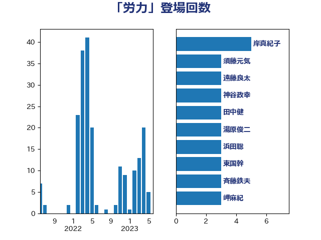

単語「労力」

| 岸真紀子 | 立憲民主党 | 5 回 |
| 須藤元気 | 無所属 | 3 回 |
| 遠藤良太 | 日本維新の会 | 3 回 |
| 神谷政幸 | 自由民主党 | 3 回 |
| 田中健 | 国民民主党 | 3 回 |
| 湯原俊二 | 立憲民主党 | 3 回 |
| 浜田聡 | NHK党 | 3 回 |
| 東国幹 | 自由民主党 | 3 回 |
| 斉藤鉄夫 | 公明党 | 3 回 |
| 岬麻紀 | 日本維新の会 | 3 回 |
| 山本剛正 | 日本維新の会 | 3 回 |
| 山岸一生 | 立憲民主党 | 3 回 |
| 山井和則 | 立憲民主党 | 3 回 |
| 伊藤渉 | 公明党 | 3 回 |
| 中島克仁 | 立憲民主党 | 3 回 |
| 馬淵澄夫 | 立憲民主党 | 2 回 |
| 長友慎治 | 国民民主党 | 2 回 |
| 進藤金日子 | 自由民主党 | 2 回 |
| 足立康史 | 日本維新の会 | 2 回 |
| 緑川貴士 | 立憲民主党 | 2 回 |
| 紙智子 | 日本共産党 | 2 回 |
| 竹内真二 | 公明党 | 2 回 |
| 田村貴昭 | 日本共産党 | 2 回 |
| 田村智子 | 日本共産党 | 2 回 |
| 河野太郎 | 自由民主党 | 2 回 |
| 沢田良 | 日本維新の会 | 2 回 |
| 新垣邦男 | 立憲民主党 | 2 回 |
| 斎藤嘉隆 | 立憲民主党 | 2 回 |
| 徳永エリ | 立憲民主党 | 2 回 |
| 岸田文雄 | 自由民主党 | 2 回 |
| 寺田稔 | 自由民主党 | 2 回 |
| 堤かなめ | 立憲民主党 | 2 回 |
| 吉良よし子 | 日本共産党 | 2 回 |
| 中村裕之 | 自由民主党 | 2 回 |
| 鬼木誠 | 立憲民主党 | 1 回 |
| 高橋千鶴子 | 日本共産党 | 1 回 |
| 青木愛 | 立憲民主党 | 1 回 |
| 長妻昭 | 立憲民主党 | 1 回 |
| 鎌田さゆり | 立憲民主党 | 1 回 |
| 鈴木義弘 | 国民民主党 | 1 回 |
| 鈴木敦 | 国民民主党 | 1 回 |
| 鈴木俊一 | 自由民主党 | 1 回 |
| 酒井庸行 | 自由民主党 | 1 回 |
| 角田秀穂 | 公明党 | 1 回 |
| 藤巻健太 | 日本維新の会 | 1 回 |
| 荒井優 | 立憲民主党 | 1 回 |
| 舟山康江 | 国民民主党 | 1 回 |
| 空本誠喜 | 日本維新の会 | 1 回 |
| 福重隆浩 | 公明党 | 1 回 |
| 福島みずほ | 社会民主党 | 1 回 |
| 神谷裕 | 立憲民主党 | 1 回 |
| 神津たけし | 立憲民主党 | 1 回 |
| 礒崎哲史 | 国民民主党 | 1 回 |
| 石垣のりこ | 立憲民主党 | 1 回 |
| 矢倉克夫 | 公明党 | 1 回 |
| 田島麻衣子 | 立憲民主党 | 1 回 |
| 玉木雄一郎 | 国民民主党 | 1 回 |
| 清水貴之 | 日本維新の会 | 1 回 |
| 清水真人 | 自由民主党 | 1 回 |
| 浦野靖人 | 日本維新の会 | 1 回 |
| 江田憲司 | 立憲民主党 | 1 回 |
| 横山信一 | 公明党 | 1 回 |
| 森屋宏 | 自由民主党 | 1 回 |
| 梅谷守 | 立憲民主党 | 1 回 |
| 松川るい | 自由民主党 | 1 回 |
| 末松義規 | 立憲民主党 | 1 回 |
| 星北斗 | 自由民主党 | 1 回 |
| 新藤義孝 | 自由民主党 | 1 回 |
| 打越さく良 | 立憲民主党 | 1 回 |
| 川田龍平 | 立憲民主党 | 1 回 |
| 岡本あき子 | 立憲民主党 | 1 回 |
| 山田勝彦 | 立憲民主党 | 1 回 |
| 山添拓 | 日本共産党 | 1 回 |
| 山本左近 | 自由民主党 | 1 回 |
| 山下芳生 | 日本共産党 | 1 回 |
| 小野泰輔 | 日本維新の会 | 1 回 |
| 小沼巧 | 立憲民主党 | 1 回 |
| 小林史明 | 自由民主党 | 1 回 |
| 小山展弘 | 立憲民主党 | 1 回 |
| 小宮山泰子 | 立憲民主党 | 1 回 |
| 寺田学 | 立憲民主党 | 1 回 |
| 宮本徹 | 日本共産党 | 1 回 |
| 奥下剛光 | 日本維新の会 | 1 回 |
| 大家敏志 | 自由民主党 | 1 回 |
| 塩川鉄也 | 日本共産党 | 1 回 |
| 堂込麻紀子 | 無所属 | 1 回 |
| 坂本祐之輔 | 立憲民主党 | 1 回 |
| 和田有一朗 | 日本維新の会 | 1 回 |
| 吉田宣弘 | 公明党 | 1 回 |
| 吉田久美子 | 公明党 | 1 回 |
| 吉田はるみ | 立憲民主党 | 1 回 |
| 古賀友一郎 | 自由民主党 | 1 回 |
| 加藤竜祥 | 自由民主党 | 1 回 |
| 加藤勝信 | 自由民主党 | 1 回 |
| 保岡宏武 | 自由民主党 | 1 回 |
| 佐藤正久 | 自由民主党 | 1 回 |
| 伊藤孝江 | 公明党 | 1 回 |
| 伊藤孝恵 | 国民民主党 | 1 回 |
| 井野俊郎 | 自由民主党 | 1 回 |
| 五十嵐清 | 自由民主党 | 1 回 |
| 中条きよし | 日本維新の会 | 1 回 |
| 中川康洋 | 公明党 | 1 回 |
| 下野六太 | 公明党 | 1 回 |
| 上田清司 | 国民民主党 | 1 回 |
| 上田勇 | 公明党 | 1 回 |
| こやり隆史 | 自由民主党 | 1 回 |